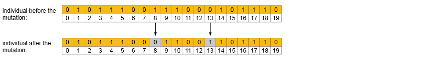

Mutation
The mutation consist in a random modification in the chromosome. There are 2 reasons to apply mutation. First, to increase the fitness value probability and second, to include a bigger search area in the space search, during the optimization process.
The mutation modifies in a random way some genes in the chromosome and usually is applied to the offspring. In the same way as occurs in the nature, the idea behind mutation is to include some error in the genes. In the cells division and mitosis the RNA make some errors in the DNA duplication. The errors might not have an impact in the living organism, But for the individual in the genetic algorithm it could means an increase in the fitness ranking.
Typically mutation is applied to the 1% percent of the new population, because the inheritance gained from the previous generation its important to keep it in order to converge in good solutions. If the mutation is too big, the inheritance is lost and basically the algorithm just produce random individuals without sense (the intelligence gets lost).
The most common mutation operator is the random replacement, consist in vary randomly a gene in the chromosome. If the chromosome is binary it is possible to swap a 1 by 0 or vice versa. Another possibilityIt is to multiply a gen by a random value between min and max values.

The mutation only varies around 1% in the chromosome. The mutation operator implemented in the GA, will depends of the space search (the problem to resolve), conditions, and the chromosome type.
The crossover operator is in charge for the fast search, while the mutation is in charge to look in all nooks in the space search. the subtle balance between both operators is a key to succeed in design robust genetic algorithms. The mutation operator is essential at the beginning of the generations, to cover as much space possible, and when the population begin to converge in order to keep the balance of the individuals in the right spots in the space search.